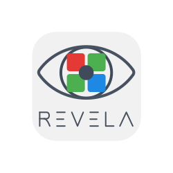

Revela ISP™
An image signal processor written in NumPy, compiled to bit-exact hardware.
Camera to screen, entirely in fabric. A Raspberry Pi camera's raw Bayer travels over HDMI to a PYNQ-Z2; black level, white balance, an adaptive Hamilton-Adams demosaic, a colour matrix and gamma all run in the FPGA at 1920×1080, 10-bit, 148.5 MHz on one clock. The mark in the corner is drawn by the pipeline itself.
Every block is a Python function using NumPy. That model is the specification, the simulator, and the source the Verilog is generated from — and the generated hardware is checked bit-exact against the model before it is allowed to emit. There is no hand-written Verilog anywhere in it.
Nor are the pipeline registers placed by hand. You give the compiler a clock and it works out, from the expression graph, how deep each stage can be, then puts the registers where they have to go. When something genuinely cannot fit it refuses at generation time and names the operation — in microseconds, rather than after a place-and-route that names a net.
Why this matters
Verification is where hardware time really goes, and everyone who has shipped RTL knows it. For an ASIC a missed bug is not a bad demo, it is a respin. Revela is generated with a FuseSoC generator, so the pipeline is a building block for a chip: you can already build one from open RISC-V cores, and the image pipeline can now come from the same place.
This is the start. The blocks in the video are the ones everybody starts with, and a long queue of image processing patents is going through expiration right now — Hamilton-Adams is in this demo because its patents expired, and more come free over the next couple of years.
The pieces
Try it
pip install revela np2hw bayerlink
The demo runs on a PYNQ-Z2 and a Raspberry Pi camera. The board design, the build script and the measurements are in bayerlink-fpga.
Talk to me
I am looking for people who will use this. If you are building a camera pipeline and the ISP is in your way, write to s.rabykin@gmail.com. Support the work at GitHub Sponsors.